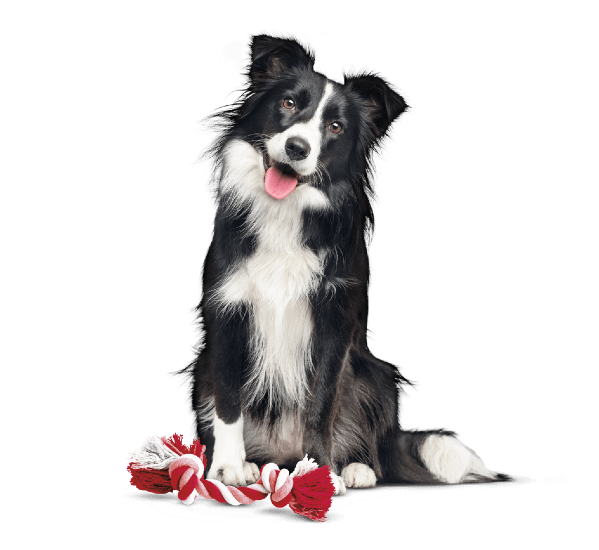

Трудолюбивые, ответственные, энергичные управленцы, держащие в ежовых рукавицах своих подопечных — нет, речь не о строгих начальниках и бизнесменах, а о собаках породы бордер-колли. Они занимают первое место в рейтинге самых умных собак, поскольку обладают очень высоким интеллектом и способны понимать владельца без слов. Они очень активны, но при этом и очень послушны: их легко дрессировать, они буквально схватывают всё налету и будто предугадывают ваши желания. Для запоминания команды достаточно всего пяти повторений. Кажется невероятным, но освоить любую команду ваш питомец может всего за сутки!